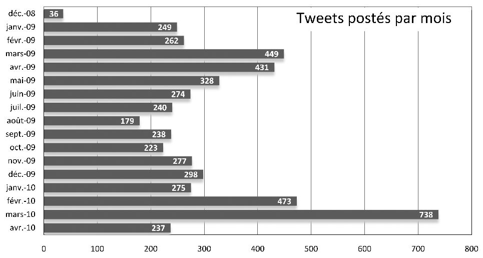
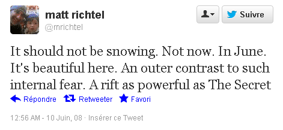

Lettre à un jeune twittérateur
Alors que la twittérature semble de plus en plus à la mode, Twitter organise un concours de nouvelles. Avis aux volontaires.
Comme j’ai pratiqué l’exercice durant seize mois lorsque j’ai écrit La quatrième théorie, roman qui sortira en avril prochain chez Fayard Noir, j’ai eu l’occasion de découvrir quelques-uns des mécaniques propres à l’écriture à contrainte sur Twitter. Autant les partager.
- Ne comptez pas innover en écrivant sur Twitter. C’était nouveau
en 2008. Mais foncez, l’exercice est jouissif.

- Découper en tweets un texte existant n’a aucun intérêt. Imposez-vous la contrainte des 140 caractères, ne trichez pas. Écrivez dans la fenêtre de Twitter ou d’une app. Votre style prendra un coup de boost. Twitter est l’équivalent contemporain de la versification. Une contrainte en remplace une autre.
- Twitter est un réseau social. Quand vous écrivez, vous êtes lu en temps réel. Restez à l’écoute des lecteurs et prenez en compte leurs remarques pour infléchir votre narration. Imaginez que vous êtes le maître de jeu d’une partie de Donjons & Dragons.
- Ne publiez pas des dizaines de tweets à l’heure. Vous
fatiguerez vos amis et leur couperez toute envie de réagir. De
décembre 2008 à avril 2010, j’ai mis 463 jours à écrire La quatrième
théorie et j’ai envoyé 5200 tweets, soit 11,2 tweet par
jours, l'équivalent d'une page de roman. Vous pouvez augmenter la
cadence, mais n’abusez pas. Le concours dure cinq jours. Si vous
postez trente tweets par jour, vous obtenez 21 000 signes,
taille raisonnable pour une nouvelle.

- Chaque tweet doit être une histoire en lui-même. Dans un dialogue, on doit avoir une réplique complète. On doit savoir qui parle à qui. Les actions commencent et finissent dans un tweet. Sinon les amis ne peuvent comprendre, ni être intrigués.
- Sur un blog, il faut reconstruire dans l’ordre chronologique le texte en cours, pour que les nouveaux lecteurs puissent prendre le train en marche. À l’époque, j’avais programmé un automate qui récupérait tweets et commentaires et les republiait sur un WordPress. Aujourd’hui, avec IFTTT, il vous faudra quelques minutes pour concocter une mécanique efficace.
- Le premier twittérateur,
Matt Richtel, avait imaginé que son personnage principal était
prisonnier et ne pouvait parler que par SMS. Cette contrainte ne me
paraît plus nécessaire. Il faut se placer résolument à la suite de
l’Oulipo, prendre la limite des 140 caractères en tant que jeu
littéraire.

- Méfiez-vous. La twittérature est hautement addictive. Quand on commence, on ne sait pas quand on s’arrête. Beaucoup de gens font l’éloge de la forme courte chère à Félix Fénéon, mais rien n’empêche de mitrailler un énorme livre en salves de 140 caractères. On peut aussi faire du long avec du court. C’est une contrainte ajoutée à la contrainte.
Suite | 2012 | Sommaire | Texte publié vendredi 9 novembre 2012